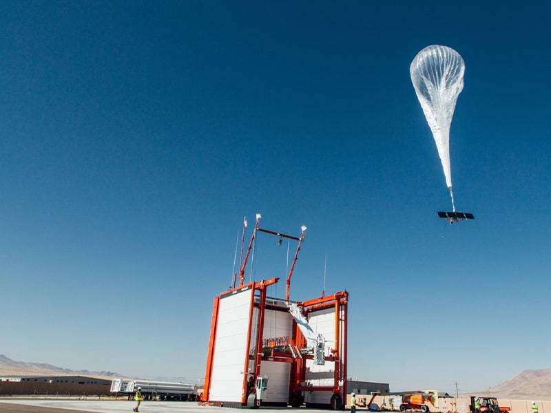

Internet being accessible to everyone? YES, PLEASE!
To say that technology is growing at a leopard’s pace is an understatement. Especially now, when Loon, the sister company of Google announced the launch of the latest flight vehicles to achieve the above-stated feat
With 3.8 billion people being deprived of access to the internet, this could be a major game-changer. While Elon Musk is reportedly working on similar things, 340 miles farther from Earth, Loon is trying to hasten this process with their new addition.
These flight vehicles, physically look like hot air balloons launched into the stratosphere. Currently, this has come into effective use for the users of Telekom Kenya. And, surprisingly, they are still unaware that their internet is reaching them through a balloon, right above their heads.
Yes, I am pretty sure the fact that they resemble a ‘balloon’, is going to raise questions about their durability but, Loon CEO Alastair Westgarth already addressed it. These flight vehicles float with the stratospheric winds and further, they can alternate between serving users or get back to the service region.

Now, how will these balloons know how to navigate? We have to thank Articifical Intelligence for that. These flight vehicles know exactly when and where to ascend or descend depending upon the various conditions around it. Sheer brilliance, if you ask me. It reduces various risks like collisions and damage. Further, these balloons have can stand 100 days which means almost 4 flight vehicles a year for every 4000 miles. Which is pretty astounding considering it 200 times more coverage than the traditional towers.
Moreover, all that these balloons need to survive is Solar Panels. And to connect to it? Any ordinary LTE mobile phone would do the job. Once it ages, these balloons do not just crash and burn, but instead, glide down with a parachute for further revamp. When it comes to performance, it is on par with any other provision of the internet.
I feel like this is an amazing move, in connecting the worlds together which the internet stands for. With turbulent times as such, connection to the outer world is a key and with such accessible modes, we are one step closer to achieving the real goal of the internet. While it is launched merely in Kenya as of now, I can see it doing rounds across the world until, and even after, SpaceX launches its satellites. The additional bonus of it being less expensive and more coverage could also mean that this can replace the traditional methods of access through towers.
In times of uncertainty like ours, the only thing certain is change and this is an extremely positive change. This could be a whole new foundation in terms of accessing the internet and it will definitely be a change that will be accepted worldwide with immense gratitude.

About Me
Hi! I am Mythri Shivakumar, the curly head who creates! I share a plethora of content ranging from simple tech things to wholesome content! "Everything happens for a reason", you have stumbled here for a reason. I hope you find it. Happy Reading!